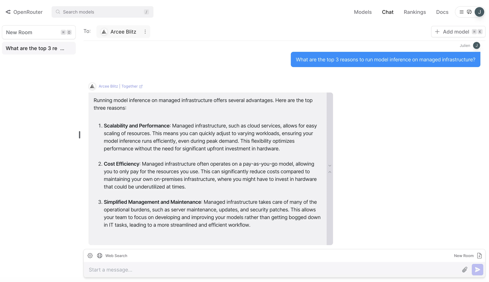
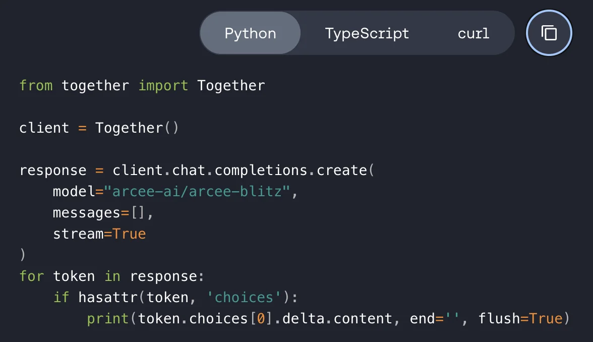

Published: 2025-05-27
Originally published at https://www.arcee.ai/blog/arcee-ai-small-language-models-on-together-ai-and-openrouter
Today, we are thrilled to announce that our suite of small language models (SLMs) is now available on Together.ai and OpenRouter , two leading platforms for managed, pay-per-token inference services. With this seamless integration, you can start building high-quality, fast, and cost-efficient AI-powered applications in minutes, without having to manage complex AI infrastructure.
Whether you’re looking for models for general-purpose chat applications, code generation, function calling, reasoning, or image-to-text, we’ve got you covered! Here are the available models.
In the world of AI, one size does not fit all. While frontier-scale "Swiss Army knife" large language models look impressive, their high cost and slow generation time are problematic for many specific business tasks. Arcee AI 's specialized SLMs represent a shift toward purpose-built AI that excels at targeted use cases.
Consider Caller Large , which we specifically trained for function-calling workflows. Unlike general models that might hallucinate API calls or struggle with parameter extraction, we specifically built and trained Caller to make deliberate decisions about when to invoke external tools. For enterprises building process automation tools, this specialization translates to fewer errors and more reliable outputs than you'd get from a jack-of-all-trades model.
Similarly, Spotlight demonstrates the power of focus—a 7-billion parameter vision-language model that punches well above its weight class on visual question-answering benchmarks. By optimizing specifically for fast inference on consumer GPUs while maintaining strong image grounding, it delivers production-ready performance for UI analysis, chart interpretation, and visual content moderation at a fraction of the computational footprint required by larger multimodal models.
As applications transition from proof-of-concept to production, the economics of AI deployment become increasingly important. Arcee AI 's SLMs offer a compelling value proposition, providing near-frontier quality at significantly reduced cost, making them a cost-effective choice for enterprises looking to maximize their AI investment.
Arcee Blitz exemplifies this approach—an extremely versatile 24-billion parameter package that runs at approximately one-third the latency and price of comparable 70B models. For high-volume use cases like customer service automation or content generation, this translates to substantial savings that compound over time. A company processing thousands of customer inquiries daily might save tens of thousands of dollars monthly while maintaining response quality that end-users can't distinguish from more expensive alternatives.
The pricing advantage extends across the entire Arcee AI lineup. Coder Large delivers competitive performance on programming benchmarks such as the DevQualityEval Leaderboard at price points well below proprietary coding assistants, enabling development teams to deploy AI coding support to more engineers with much less concern for usage costs.
Technical scalability matters as much as economic scalability. Virtuoso Medium V2 exemplifies this approach with its aggressive quantization options—from full BF16 precision down to 4-bit GGUF variants that can run on consumer hardware. Organizations can start experimenting with a proof-of-concept running locally at near-zero cost, then seamlessly scale to cloud deployment as usage grows.
The scalability advantage extends to context handling as well. Models like Virtuoso Large maintain impressive 128K context windows despite aggressive optimization, allowing them to process entire codebases, legal documents, or scientific papers in a single pass. You can eliminate complex chunking strategies or context management that might otherwise become bottlenecks as applications scale.
Arcee AI 's models deliver exceptional performance on metrics that matter for business applications. Maestro Reasoning isn't just a 32B parameter model—it doubles the pass rates on challenging MATH and GSM-8K benchmarks compared to its predecessors while maintaining full transparency in its reasoning process. For financial analysis, scientific computing, or any scenario requiring audit trails, this combination of accuracy and explainability is invaluable.
Similarly, Coder Large doesn't just understand multiple programming languages—it demonstrates 5-8 percentage point gains over CodeLlama-34B-Python on key benchmarks, particularly in producing compilable, correct code. For development teams, this translates to fewer debugging cycles and more reliable suggestions.
This performance advantage stems from Arcee AI 's focused training methodology. Rather than optimizing for general benchmark leaderboards, each model undergoes specialized fine-tuning and reinforcement learning aligned with its intended use case, resulting in domain-specific capabilities that outshine models of similar or even larger size. This ensures that you're getting the highest quality and performance from our models.
Building AI applications requires more than just powerful models—it demands reliable infrastructure, optimization expertise, and operational support. Instead of designing great features and user experiences, development teams have to spend time managing clusters, wrestling with the CUDA dependencies, and performing plenty of other undifferentiated technical tasks.
Managed inference platforms like Together.ai and OpenRouter dramatically simplify the development process. They handle the complex infrastructure requirements of model deployment, from GPU provisioning and scaling to load balancing and redundancy. In fact, Arcee is using Together.ai to host all the models available in Arcee Conductor , our model routing inference platform!
Thanks to user-friendly playgrounds, you can start testing models immediately without writing any code.

Of course, production-ready OpenAI-compatible APIs are available, and they enable quick integration with existing systems. Whether you're building a new application from scratch or enhancing existing systems with AI capabilities, these standardized interfaces significantly reduce time-to-market compared to self-hosted alternatives.

Get started today by signing up on Together.ai or OpenRouter .
Explore the models, integrate them into your applications, and unlock new levels of business value with Arcee AI . The future of AI is here, and it's more accessible and efficient than ever.
If you have any questions, feel free to contact us at support@arcee.ai 😃